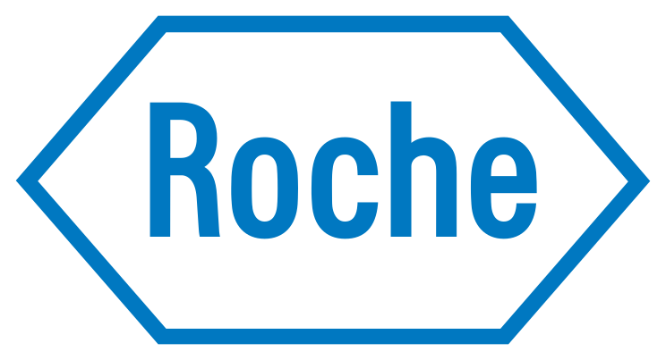

I like the *hard parts of product design.

Eleven years of product design, most of it where enterprise complexity meets real people: telecom e-commerce, account systems, payments, trade-in logistics, API marketplaces, and the design systems that hold them together.
My work sits at the intersection of user insight, product strategy, business goals, and execution. The parts I enjoy most are the parts teams dread: understanding the real problem under the stated one, aligning stakeholders who own different pieces of a broken whole, and shaping solutions thoughtful enough for users, practical enough to ship, and strong enough to support the business.
I'm strongest where complexity needs to become simple — clarifying a workflow, improving comprehension in a high-stakes flow, strengthening a design system, or helping a team make better decisions through research and iteration. To me, design is judged by what changes because of it: faster workflows, clearer decisions, stronger adoption, fewer support calls.
How I work with AI
I use AI as a design and thinking instrument, not a slogan. Current, real examples: I designed and run a personal operating system — markdown, skills, and automated reviews — that manages my work pipeline; I built an AI-assisted brand-audit workflow that produces research-grounded sales audits in minutes; and this site was designed directly in code, AI-assisted, from a written design system. I care about where AI genuinely compresses work — research synthesis, iteration speed, edge-case exploration — and where human judgment has to hold the pen.
What I'm looking for
Teams where design is a strategic partner — where thoughtful product decisions, strong collaboration, and measurable outcomes matter more than theater.
Three kinds of hard, one designer
Flows where design failure costs real money
Commerce, trade-in, payments, credit checks — the enterprise paths where a confused user is a lost order. Trade-in alone: ~10% order-completion lift per business client after the rebuild.
Interfaces where models interpret and humans confirm
Designed enterprise ordering for human and AI-agent users — real-time UI as the verification layer for model-interpreted data. Built and validated before "agentic UX" had a name.
Complexity made navigable for teams and users
Design systems as contracts across 200 codebases, eligibility-first patterns that answer before the tap, research designed to survive medical-legal review and win stakeholder fights.
Eleven years of rooms with high stakes
 TT-Mobilet-mobile.com ↗
TT-Mobilet-mobile.com ↗Senior product designer, 2021–2026. Business e-commerce, trade-in across four surfaces, the API Marketplace for human and AI ordering, account systems, registration, credit check, and Salesforce/ServiceNow flows — 118+ shipped projects.
 WUWestern Unionwesternunion.com ↗
WUWestern Unionwesternunion.com ↗Senior product designer, 2018–2019. The agent locator rebuilt as an eligibility product, money transfer and status, onboarding, loyalty, dashboards — 72+ projects across a network of 200+ countries and 40+ languages.
Interactive sales experiences and disease-education content designed to survive medical-legal review (via Viscira, 2015–2017).

RRocheroche.com ↗Digital sales aids and touchscreen congress experiences for global pharma teams, every claim reviewed (via Viscira).
Responsive education sites and interactive presentations under regulatory constraints (via Viscira).
 BMSBristol Myers Squibbbms.com ↗
BMSBristol Myers Squibbbms.com ↗Digital product work across the oncology portfolio’s education and sales tooling (via Viscira).
Rare-disease education products — including the responsive site that held its audience through a full rebuild and earned a two-year extension.
Sports-betting platform redesign, 2021: odds views, bet flows, account management, recommended actions.
Mobile-first anonymous workplace communications, 2015 — iOS, responsive web, and the dashboard that closed the loop.
Four voices, on the record
“I managed Steven Tran for over a year at T-Mobile, and I knew I could always rely on him to take on the most complicated product design projects and manage them from start to finish. Steven can define technical requirements and work with key stakeholders through the design thinking process. He has analytical skills and possesses a finesse of creative problem-solving in extremely challenging circumstances… Any product design team is lucky to have him as a senior product designer.”